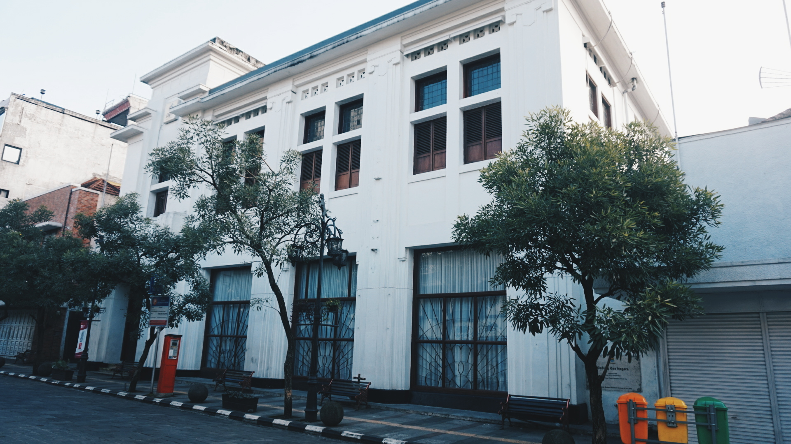
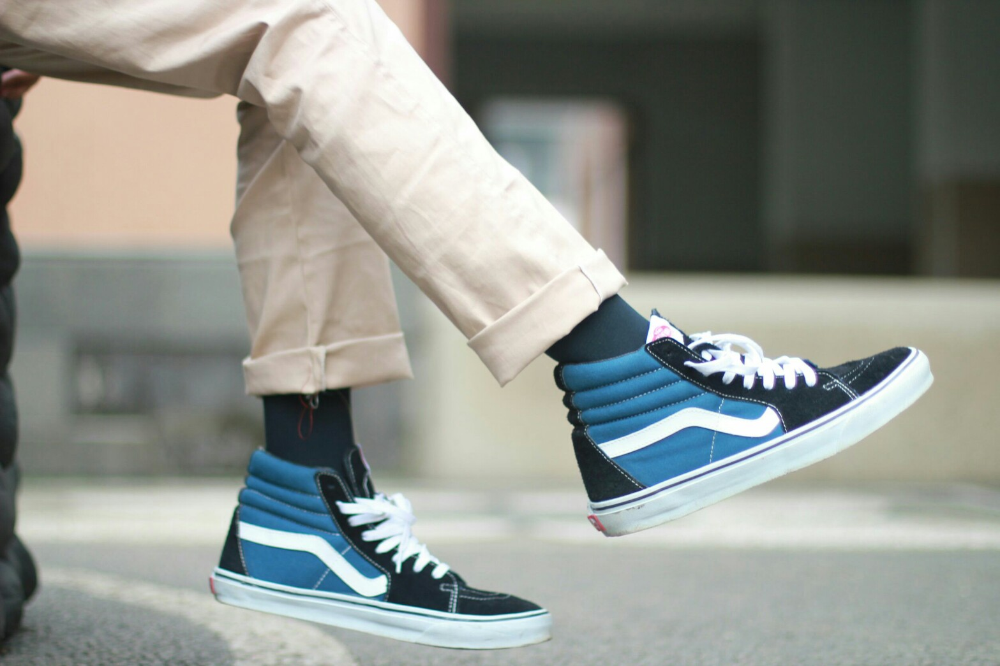
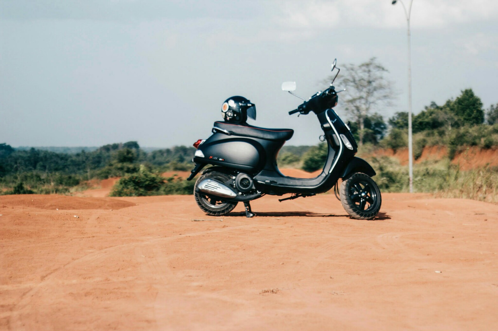

Portfolio
  
Ini adalah contoh dari karya-karya saya yang pernah saya konteskan, dan alhamdulillah saya memenangkan kontes itu, dan inshaallah saya tidak akan berhenti membuat karya-karya saya, mengapa saya pilih tiga? karena tiga foto ini merupakan karya-karya terbaik saya, selengkapnya kalian bisa cek karya-karya saya di instagram, silahkan cek dibagian Social Media!
kemampuan

KONSEP
Memberikan ide-ide yang cemerlang kepada client mengenai konsep, dan memberi masukan-masukan yang mungkin bisa dipertimbangkan atau menjadi solusi terbaik.
FOTOGRAFI
Kemampuan berfoto dan mencari angle-angle yang pas beserta konsep fotografi yang sedang dicari atau menciptakan konsep tersendiri yang memiliki nilai khas.